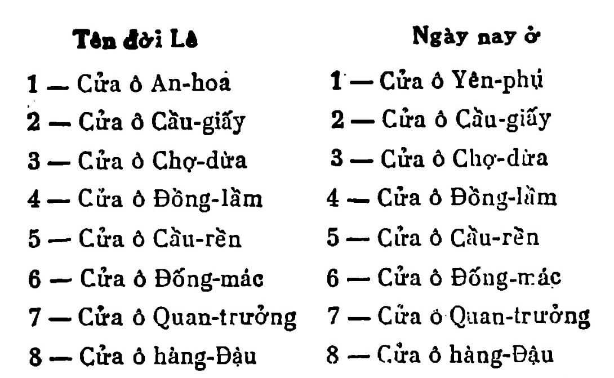

Nhà Lê lại theo cũ mà xây lại, nhưng cho nó hơi né về Tây bắc chứ không né về phía Đông bắc như thành nhà Lý. Đến đời Gia long thì thành Hà nội lại xây né về Đông bắc như nhà Lý.
Nửa phần căn cứ vào sách vở, nửa phần theo tưởng tượng, tôi tạm phác qua cái bản đồ thành Thăng Iong hồi nhà Lê dưới đây.
Tám cửa ô hiện bây giờ chỉ còn một, nhưng lại đổi tên. Còn ra chỉ còn cái tên nhắc cho dân gian biết rằng khi xưa chỗ đó là cửa quách.

.
Thành Thăng long nhà Lê bao bọc một phần lớn các đường trong thành cũ của nhà Nguyễn và cả cái vườn Bách thảo, vùng chợ hàng Da và các nhà cửa ở các đường Carnot, Quán thánh bây giờ. Trên bản đồ thành phố Hà nội bây giờ, ta sẽ vạch một con đường đi đóng đôi với đường hàng Gai hàng Bông, từ góc hai đường hàng Bồ hàng Bút đến hết địa phận đền Giám. Đó, bức thành phía Nam thành Thăng-long nhà Lê. Giữa bức tường đó, ở góc đường Puginiervà đường vào thành (đường gióng đôi với đường Maréchal Joffre) là cửa Đại Hưng, cửa thành to nhất hồi Lê.
Ta lại vạch một con đường từ góc hai đường hàng Bồ và hàng Bút đến góc đường Đỗ hữu Vị và Jambert. Đó, bức thành đông thành Thăng long, cửa Đông hoa ở vào góc hai đường Maréchal Joffre và Carnot, cửa ấy trông chéo sang vườn hoa hàng Đậu.
Ta lại vạch một đường từ góc hai đường Đỗ hữu Vị và Jambert tới góc hai đường Brière de l’lsle và Quán thánh (chỗ nghĩa địa).
Chỗ góc ấy, xưa là Trần bắc môn, trông thẳng sang đường Cổ ngư và đền Quán thánh. Từ Trấn bắc môn trở đi thành xây vòng theo đường Barreau, bọc cả vườn Bách thảo; rồi đến bực thành xây đi sát cạnh chùa Một cột (chùa ở ngoài thành) đến gần Giám. Tới Giám, thành thụt vào một ô vuông, để Giám ở ngoài.
Phủ chúa Trịnh ở vảo cánh đồng làng Thịnh hào, trông ra con đường đưa đến Đại Hưng môn. Bây giờ đứng trước nhà bảo - cô Sœur Antoine làng Bột, nếu ta cứ tưởng tượng rằng cửa chính trại ấy là Cốc môn cũ Trịnh phủ thì tưởng chừng cũng không sai là mấy.
Lượng quốc phủ, phủ đệ của các vị thế tử nhà Chúa thì ở vào chỗ nhà Tế sinh bây giờ. Hướng quay về Tây nam, nhìn sang phủ Chúa. Phía Đông bắc có một cửa để đi sang cửa Đại Hưng cho gần. Phía Đông nam có một cửa nữa để sang phủ đường Phủ Phụng Thiên là phủ sở tại ở đế đô, coi hai huyện Thọ Xương và Quảng Đức.
Phủ Phụng thiên đóng ở đường Borgnis Desbordes và Richaud bây giờ, cổng quay về phía vườn hoa cửa Nam- tức là cửa Đại-hưng- trên cổng viết mấy chữ son to:
Kinh Triệu Phủ Nha
Về Phủ Phụng thiên có ông Kinh Triệu Phủ Doãn đứng đầu, nên dân gian vẫn quen gọi là Phủ Doãn. Tên ấy còn sót đến ngày nay, dùng để gọi bệnh viện đường Borgnis Desbordes.
Ba mươi sáu phường thì huyện Thọ xương gồm 27 phường, huyện Quảng Đức chỉ có chín phường thôi. Các phường thuộc Thọ xương có phố, xá [11], việc buôn bán thịnh, người đông đúc. Các phường thuộc Quảng Đức là những phường ngoại ô, cũng tựa như các làng ở nhà quê.
Chữ ‘‘phố’’ nguyên nghĩa là cái nhà. Người Trung quốc dùng để chỉ cái cửa hàng. Như nói rằng: ông ấy ở đường Lâm do, phố số 25.
Sang tiếng ta, chữ ấy cũng dùng để gọi cái nhà để làm cửa hàng, xoay mặt ra đường. Các (phố) hàng Bồ ở tụ lại một chỗ ; các phố hàng Nón tụ lại một chỗ. Sau lâu dần, vì hiểu lầm, vì dùng sai mãi, chữ phố mới biển nghĩa đi. Bây giờ dùng như chữ thong cù, lộ, nhai hoặc boulevard, rue, avenue. Ở trong Nghệ, dân gian dùng chữ ấy còn đúng nghĩa như lúc Lê, nghĩa là đúng nguyên nghĩa của nó. Ở Nghệ, ta thường nghe thấy nói: Bà Mỗ làm bốn phố ở đường Sarraut, tốn linh vạn bạc.
Các phường có phố buôn bán, ở đời Lê đều ở vào khoảng giữa thành, phủ chúa, hồ Kiếm và bờ sông.
☆
Cuộc viếng sống thành Thăng long của hai ông đồ đến chập tối thì kết liễu.
Chiều tối hôm ấy hai ông thi nhau uống rượu. Câu chuyện cảm khái về thì thế kéo dài mãi đến nửa đêm.
Khi say, Đồ Ngọc đứng lên giường thét lên mà hát:
Dốc bầu cạn chén ta ca
Hỏi rằng thân thế biết là làm sao?
Dường như sương lộ sớm chiều
Ngày qua nghĩ lại bao nhiêu bất bình.
Khái nhiên mình lại hỏi mình
Sao cho quên nỗi bất bình hôm nay?
Rượu tăm chuốc chén cho đầy
Xanh xanh chàng áo lòng này nhớ ai!
Lần lần ngày một ngày hai
Trầm ngâm đợi mãi một người đến nay
Ví chăng có mặt lúc này
Cùng nhau chuốc chén rượu đầy cùng ca.
Đồ Trạc hỏi:
— Ca cái gì? Ngụy Vô Đế hoành sáo phú thi [12] thi ca rằng:
Trên trời trăng sáng sao mờ
Về Nam ô thước hững hờ trên không
Quanh cây lượn đã ba vòng
Cành cây để đỗ vẫn không có mà.
Đồ Ngọc hát nối:
Núi kia chẳng có từ cao
Nước sâu sấu biết chừng nào mới thôi
Hoàng hà nước tự trên trời
Bon bon đổ bể có đời nào thôi!
Lầu cao gương sáng đem soi,
Soi vào tóc trắng rụng rời chưa ai?
Ngày xanh lần lữa dùi mài
Tóc xanh thành trắng, đời người còn chi?
Chi bằng đắc ý cười khì.
Vui cho vẹn kiếp, mãn thì, thì thôi
Dưới trăng cốc rượu đừng vơi
Còn thân rồi cũng có ngày vinh hoa
Tiền tiêu hết lại kiếm ra
Rượu ngon hãy biết uống và trăm thưng.
Những câu các ông hát, câu thì như dịch bài ‘‘Đoản ca hành’’ câu thì như dịch bài ‘‘Tương tiến tửu’’. Đương phỏng theo bài nọ các ông nhẩy chồm sang bài kia, rõ là người say rượu dịch thơ. Có Iẽ các ông cũng không biết là mình dịch thơ cổ nữa, nghĩ đến đâu hát đến đó, rồi tự nhiên những bài thơ cũ cứ hiện ra trong trí một cách tiềm thức lờ mờ.
Người say có biết mình làm gì đâu!
Ca hét, gầm, thét, chán các ông ngã gục cả xuống mâm rượu, mặc kệ cả thì lẫn thế, trị lẫn loạn...
Vinh, Septembre — Octobre 1937
DAI NAM CO.
p.o. Box 4279 Clendale, CA 91202 U.S.A.
Chú thích:
[1] Chu Công làm việc chăm, đêm ngồi đợi sáng (đãi đán) để làm việc
[2] Người nào đánh bạc thua nhiều, đánh đuổi mãi để gỡ, càng đuổi càng thua, càng thua càng đuổi, gọi là khát nước.
[3] Rồng phục hổ ngồi, nói chỗ nào địa thế hiểm yếu đáng chỗ đế vương ở.
[4] Cổ văn có bài ‘‘Điếu cổ chiến trường’’ (Viếng chiến trường cổ)
[5] Một trong 24 tiết trong một năm. Hôm ấy ngày ngắn đêm dài nhất trong một năm (Solstice d’hiver)
[6] Thôi là đẩy, sao là gõ Đời Đường, Giả Đào đến Kinh thi, cưỡi lừa làm thơ. Trong thơ có câu ‘‘Tăng thôi nguyệt hạ môn’’ (Dưới trăng sư đẩy cửa). Giả muốn đổi chữ thôi ra chữ sao, trù trừ nghĩ mãi chưa quyết. Sau hai chữ ấy, vì thế nghĩa là chữa văn cân nhắc từng chữ.
[7] Vẽ rắn thêm chân.
[8] Con đê đắp sát thành Thăng Long, bờ sông Nhị Hà.
|9] Khi đó nhà Đường gọi nước ta là Tĩnh Hải quận.
[10] Ta gọi lầm là địa lý. Chính ra địa lý là géographie. Phong thủy học mới là cái học tìm long tróc hổ để mồ để mã.
[11] Xá= quán chữa khách.
[12] Ngụy Vô Đế (Tào Tháo) xầm ngang ngọn giáo mà ngâm thơ.